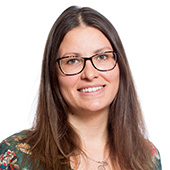

All of our trainers are Research Fellows based at the Stockholm Environment Institute, working with Mistra funded council for Evidence-Based Environmental Management (EviEM), undertaking systematic reviews and systematic maps in environmental management. Our trainers are endorsed CEE systematic review trainers.
Dr Neal Haddaway is a Senior Research Fellow at the Stockholm Environment Institute. Many of Neal’s reviews focus on agricultural practices, but he has also worked on reviews in conservation science, human wellbeing, climate change and greenhouse gas emissions, and forestry. Neal is very active in publishing methodological guidance related to systematic review methods and is involved in a number of working groups with the Collaboration for Environmental Evidence. Neal is also a member of the Expert Group on Knowledge Synthesis Methods that forms part of the EU funded EKLIPSE project. He has over 8 years’ experience of working with evidence synthesis and delivering training in review methods.

Dr Biljana Macura is a Research Fellow at the Stockholm Environment Institute. Biljana is an environmental social scientist with an interdisciplinary background and research interests in qualitative and mixed method evidence synthesis. She has prior experience of evidence synthesis and systematic review methods in biodiversity governance effectiveness. Biljana is currently leading a systematic review that explores how shoreline development may affect early life stages of fish and she is also involved in systematic review on the impact of browsing and grazing on forest biodiversity. Biljana is Editorial Manager of the CEE journal Environmental Evidence.